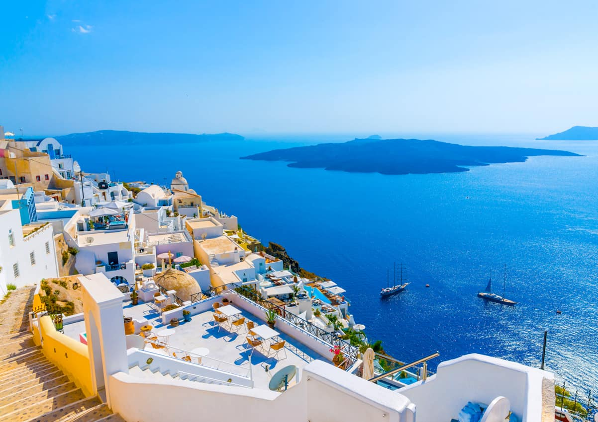
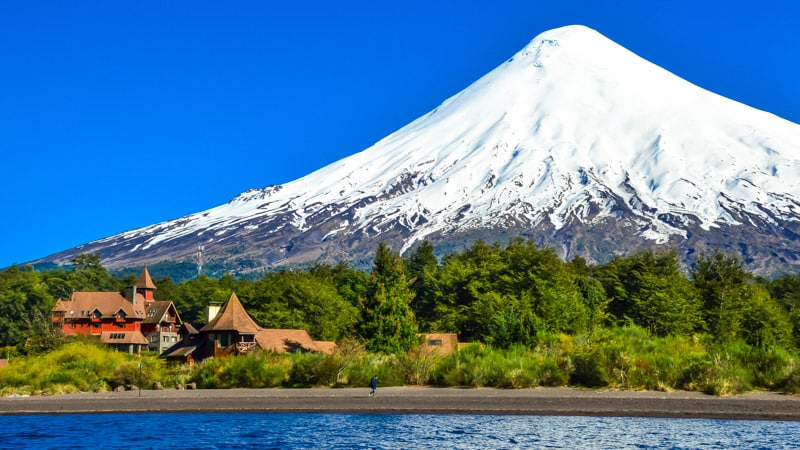

UM SONHO? VIAJAR PELO MUNDO!
Desde pequena, sempre fui uma menina sonhadora, buscava usar a imaginação para tudo que iria fazer, amava dançar, pintura em tela, teatro e conforme fui crescendo, essa essência permaneceu dentro de mim, mesmo que a agitação do dia a dia não permita que consiga fazer as coisas que amo. Viajar, acima de qualquer coisa, é uma meta na minha vida e aqui estão alguns de muitos lugares que sonho em conhecer.
Grécia
Com suas tradicionais casas brancas e igrejas de cúpula azul construídas ao longo das encostas, Santorini é um dos destinos turísticos mais famosos da Grécia. É cenário de folhetos de viagem a postagens do Instagram. E não é à toa que se tornou uma das principais referências no imaginário popular de ilha grega.
Holanda
Você sabia que a Holanda é a terra das tulipas? As flores foram trazidas do Império Otomano no século XVI e adotadas como flor nacional tempos depois.
O país é sede do maior parque de tulipas do mundo, o Keukenhof. Ao todo, cerca de sete milhões de tulipas florescem anualmente no local; não é à toa que essa beleza atrai turistas do mundo inteiro. O país se renova na primavera acompanhado de uma paisagem colorida e vibrante!
As tulipas desabrocham geralmente entre meados de abril até meados de maio. Se você viajar nessa época, não esqueça de reservar os ingressos sem fila para o Keukenhof.

Chile
Considerado o destino mais famoso, as estações de esqui de Valle Nevado, El Colorado, La Parva e Farellones juntas formam a maior superfície para se esquiar da América do Sul. Você pode passear de uma estação a outra só de teleférico ou com o esqui e apreciar a vista de cada estação. As atração off-pistas são um circuito de jogos aéreos que funciona das pontes de corda à tirolesas, onde os participantes são transportados até o local de partida e deslizam até próximo restaurante principal da estação. Além do tubing, que é uma versão dos tobogãs na neve com boias típicas de parques aquáticos.
